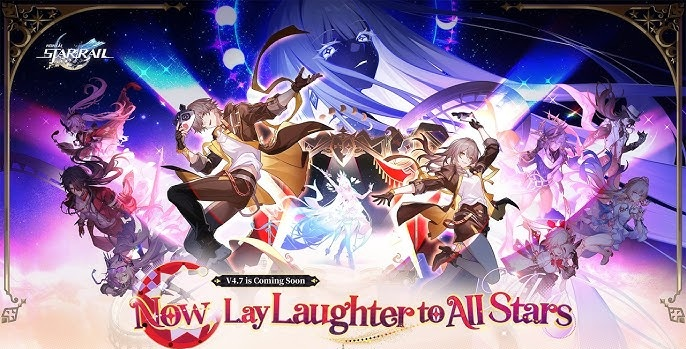
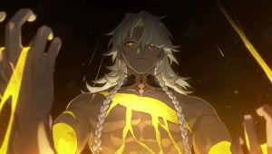
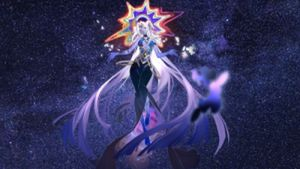
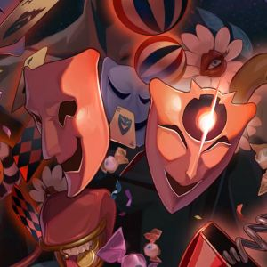

Introdução a Honkai: Star Rail
Neste projeto irei falar sobre um dos meus jogos favoritos, chamado Honkai: Star Rail

Página oficial do jogo
O que é Honkai: Star Rail?
Honkai: Star Rail é um jogo RPG gacha 3D desenvolvido e publicado pela empresa chinesa Hoyoverse
-
O termo gacha refere-se a gachapons,máquina japonesas de venda de brinquedos em cápsulas
-
É possível obter personagens 4 e 5 estrelas através de "inocações", mais conhecido por pulls
-
Cada vez que é feito um pull, o personagem 5 estrelas tem 0.600% de hipotese de aparecer e em cada 10 pulls um personagem 4 estrelas é garantido. Ou seja, resume-se tudo a sorte.
Mas qual é a história de Honkai: Star Rail?
Em Honkai: Star Rail, jogamos como o personagem pricipal chamado de Traiblazer, que foi criado apartir de um Stellaron,pelas Stellaron Hunters chamadas Kafka e Silver Wolf, com o objetivo de ajudar outros planetas das suas crises.
-
O que é um Stellaron? Um Stellaron é um objeto misterioso criado apartir do Xipe, Aeon da harmonia, que se espalha pelos cosmos, sendo conhecido como Cancro de Todos os Mundos.
-
O que são os Stellaron Hunters? A equipa Stellaron Hunters, composta pelos personagens Kafka, Silver Wolf, Blade, Elio e Firefly, têm um único objetivo: garantir um futuro possível onde o Universo não é destruido por Nanook, o Aeon da destruição.
-
Mas afinal o que são Aeons? Aeons, são os "deuses" deste Universo. Já foram mortais, mas ascenderam a um nível de existência superior ao se fundirem com o seu caminho, Path. Por exemplo: Nanook é o deus da destruição, logo fundiu-se com o caminho da destruição; Xipe é o deus da harmonia, logo fundiu-se com o caminho da harmonia; Aha é o deus da Euforia, Elation, logo fundiu-se com o caminho da euforia.


